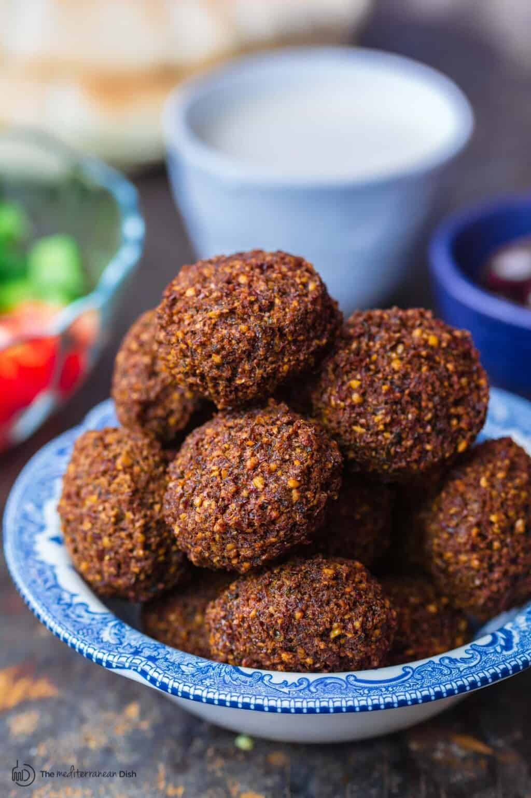

Falafel

Recipe Credit: The Mediterranean Dish
Easy Authentic Falafel Recipe
Falafel is a popular Middle Eastern “fast food” made of a mixture of chickpeas (or fava beans), fresh herbs, and spices that are formed into a small patties or balls.
Falafel continues to be the people’s daily grub in Egypt and you can find it from street vendors in almost every neighborhood.
It’s often served in sandwich form with a generous drizzle of tahini and loads of Mediterranean salad, along with slices of roasted or fried eggplant.
This vegan dish is made with simple, everyday ingredients and you won’t believe how easy it is.
Great ingredients are key to great falafel so be sure to purchase high quality spices like cumin and coriander for your falafel mixture.
Ingredients
- 2 cups dried chickpeas (Do NOT use canned or cooked chickpeas)
- 1/2 tsp baking soda
- 1 cup fresh parsley leaves, stems removed
- 3/4 cup fresh cilantro leaves, stems removed
- 1/2 cup fresh dill, stems removed
- 1 small onion, quartered
- 7–8 garlic cloves, peeled
- Salt to taste
- 1 tbsp ground black pepper
- 1 tbsp ground cumin
- 1 tbsp ground coriander
- 1 tsp cayenne pepper, optional
- 1 tsp baking powder
- 2 tbsp toasted sesame seeds
- Oil for frying
Falafel Sauce
- Tahini Sauce
- Fixings for falafel sandwich (optional)
- Pita pockets
- English cucumbers, chopped or diced
- Tomatoes, chopped or diced
- Baby Arugula
- Pickles
Instructions
- (One day in advance) Place the dried chickpeas and baking soda in a large bowl filled with water to cover the chickpeas by at least 2 inches. Soak overnight for 18 hours (longer if the chickpeas are still too hard). When ready, drain the chickpeas completely and pat them dry.
- Add the chickpeas, herbs, onions, garlic and spices to the large bowl of a food processor fitted with a blade. Run the food processor 40 seconds at a time until all is well combined forming a the falafel mixture.
- Transfer the falafel mixture to a container and cover tightly. Refrigerate for at least 1 hour or (up to one whole night) until ready to cook.
- Just before frying, add the baking powder and sesame seeds to the falafel mixture and stir with a spoon.
- Scoop tablespoonfuls of the falafel mixture and form into patties (1/2 inch in thickness each). It helps to have wet hands as you form the patties.
- Fill a medium saucepan 3 inches up with oil. Heat the oil on medium-high until it bubbles softly. Carefully drop the falafel patties in the oil, let them fry for about 3 to 5 minutes or so until crispy and medium brown on the outside. Avoid crowding the falafel in the saucepan, fry them in batches if necessary.
- Place the fried falafel patties in a colander or plate lined with paper towels to drain.
- Serve falafel hot next to other small plates; or assemble the falafel patties in pita bread with tahini or hummus, arugula, tomato and cucumbers. Enjoy!